Restorani koje
moraš posjetiti
Restaurants you
must visit
 Legenda od 1989.
Legend since 1989
Legenda od 1989.
Legend since 1989
Restoran Kero slovi za najstariju i najpopularniju ćevabdžinicu u Rožajama, otvorenu 1989. godine. Ručno miješano meso, svježe pečen somun i domaći prelivi — recept koji se nije mijenjao decenijama. Interijer krasi kolekcija originalnih uljanih slika. Restaurant Kero is considered the oldest and most popular ćevap house in Rožaje, opened in 1989. Hand-mixed meat, freshly baked somun bread and homemade sauces — a recipe unchanged for decades.
 #1 u Rožajama
#1 in Rožaje
#1 u Rožajama
#1 in Rožaje
Ocijenjen brojem jedan u Rožajama. Moderna atmosfera, svježe mljevena kafa, bogata lista pića i lagana hrana — omiljeno mjesto mještana i turista od jutra do kasno u noć. Rated number one in Rožaje. Modern atmosphere, freshly ground coffee, an extensive drinks menu and light food — a favourite spot for locals and tourists from morning until late at night.
 Porodičan
Family
Porodičan
Family
Prostran porodičan restoran uz magistralu E65 s bogatim menijom — svježe čorbe, jela u loncu, sezonski specijaliteti i roštilj. Idealno za veće grupe i porodična slavlja. A spacious family restaurant along the E65 with a rich menu — fresh soups, slow-cooked dishes, seasonal specialities and grill. Ideal for larger groups and family celebrations.
 Etno · Tradicija
Ethno · Tradition
Etno · Tradicija
Ethno · Tradition
Autentičan etno restoran u drvenoj kući okruženoj borovinom. Dim s ognjišta, starinski predmeti i bosanska kuhinja — bosanski lonac, mantije, pita i jagnjetina ispod sača. Authentic ethno restaurant in a log cabin surrounded by pine forest. Hearth smoke, antique décor and Bosnian cuisine — pot stew, mantije, cheese pie and lamb under the sač bell.
 Planinski · Hajla
Mountain · Hajla
Planinski · Hajla
Mountain · Hajla
Restoran u podnožju Hajle (2.403 m). Svjež planinski vazduh, domaće jagnjeće meso i planinski specijaliteti u netaknutoj prirodi — omiljeno odredište planinara i porodica. A restaurant at the foot of Hajla (2,403 m). Fresh mountain air, local lamb and mountain specialities in unspoilt nature — a favourite destination for hikers and families.
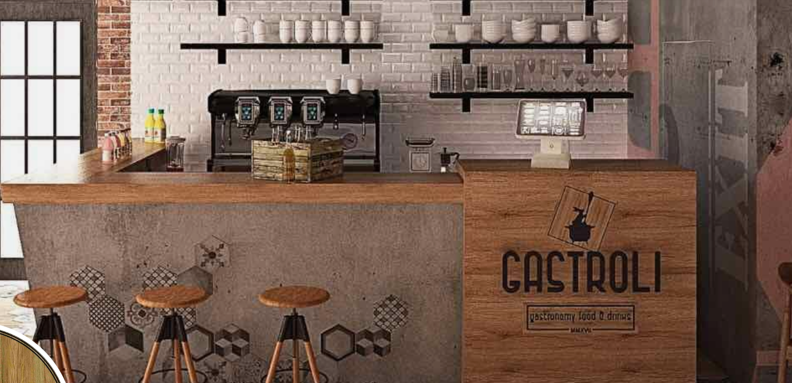
Domaće · Roštilj Home · GrillRestoran Gastroli nudi bogatu domaću kuhinju rožajskog kraja — svježa jela s roštilja, domaće čorbe i tradicionalni specijaliteti. Topla atmosfera i brza usluga čine ga popularnim izborom u gradu. Gastroli restaurant offers a rich home cuisine from the Rožaje region — fresh grilled dishes, homemade soups and traditional specialities. Warm atmosphere and quick service make it a popular choice in town.
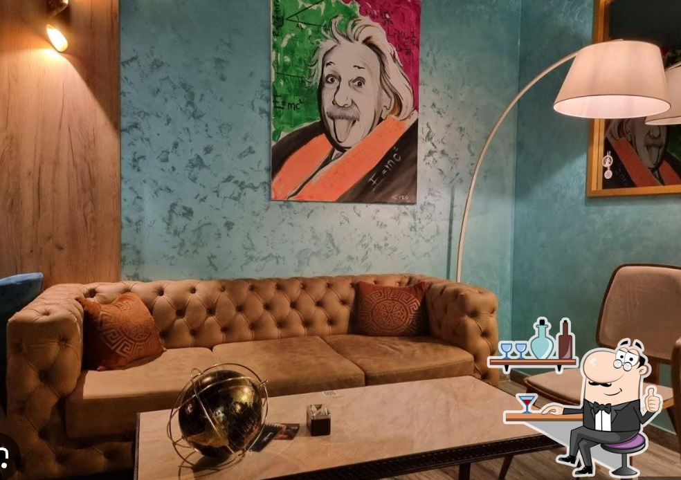
Kafić · Bar Café · BarKomitet je moderan kafić i bar u centru Rožaja, poznat po odličnoj kafi i ugodnoj atmosferi. Idealno mjesto za jutarnju kafu, poslovni sastanak ili opušteno veče s prijateljima. Komitet is a modern café and bar in the centre of Rožaje, known for excellent coffee and a pleasant atmosphere. The ideal place for a morning coffee, a business meeting or a relaxed evening with friends.
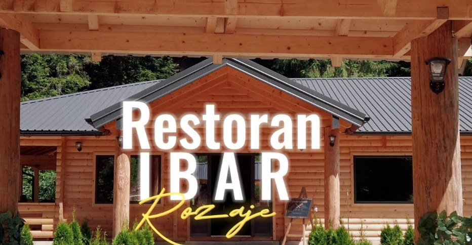
Uz rijeku Ibar By the Ibar RiverRestoran Ibar nosi ime po rijeci Ibar čiji izvori se nalaze u okolini Rožaja. Nudi domaću kuhinju s naglaskom na svježu ribu i jela s roštilja, u mirnom ambijentu blizu prirode. Restaurant Ibar takes its name from the Ibar river, whose sources are near Rožaje. It offers home cuisine with an emphasis on fresh fish and grilled dishes, in a peaceful setting close to nature.
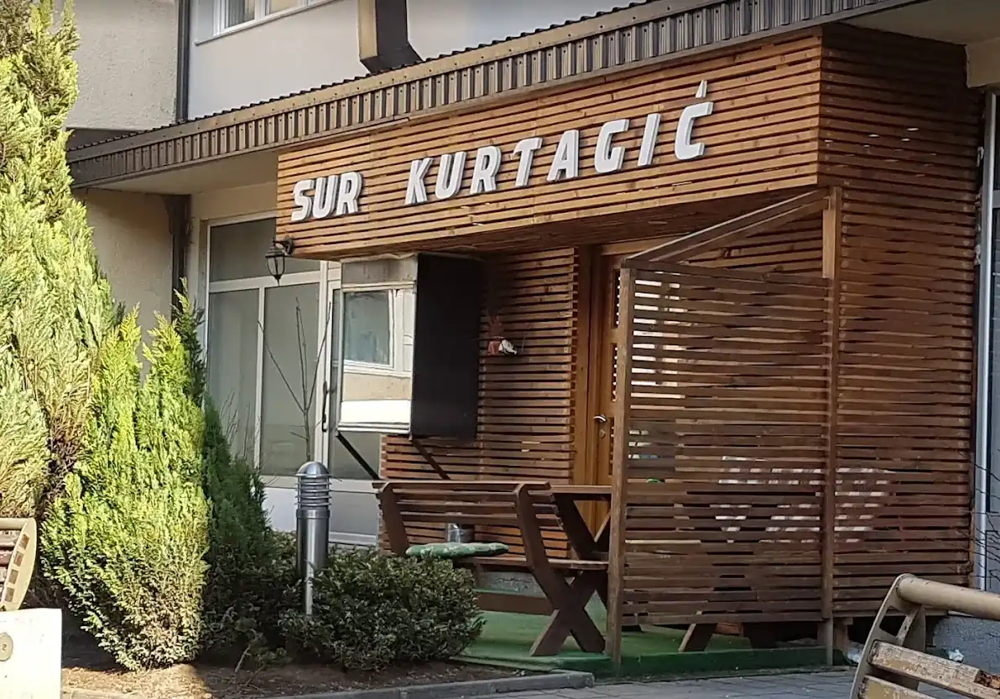
Porodično · Tradicija Family · TraditionPorodični restoran Kurtagić s dugom tradicijom u Rožajama. Specijaliteti s roštilja, domaći ćevapi i jela pripremljena po tradicionalnim receptima. Topla, domaćinska atmosfera i gostoprimstvo u svakom zalogaju. Family restaurant Kurtagić with a long tradition in Rožaje. Grill specialities, homemade ćevapi and dishes prepared from traditional recipes. Warm, homely atmosphere and hospitality in every bite.
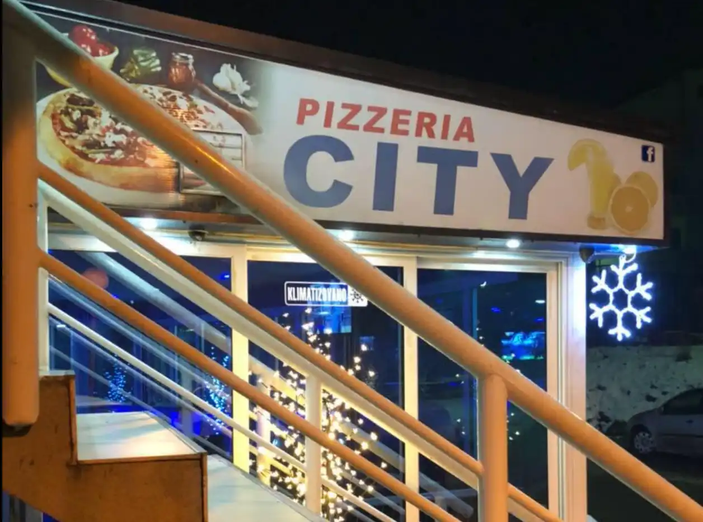
Pizza · Brza hrana Pizza · Fast FoodPizzeria City je popularna pizzeria u centru Rožaja s bogatom ponudom pizza, paste i brze hrane. Svježe tijesto, kvalitetni sastojci i brza usluga — idealno za porodice i mlade. Pizzeria City is a popular pizzeria in the centre of Rožaje with a wide selection of pizzas, pasta and fast food. Fresh dough, quality ingredients and quick service — ideal for families and young visitors.
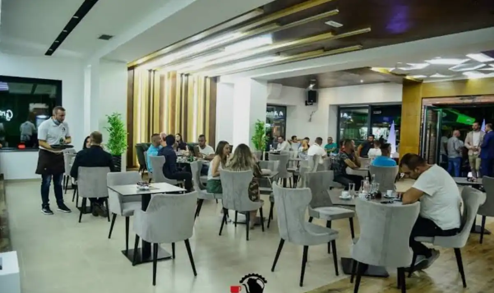
Kafić · Restoran Café · RestaurantGracia je ugodan kafić i restoran s elegantnom atmosferom u Rožajama. Poznata po ukusnim desertima, raznovrsnoj hrani i odličnoj kafi — savršeno mjesto za opuštanje i uživanje u svakom trenutku dana. Gracia is a pleasant café and restaurant with an elegant atmosphere in Rožaje. Known for delicious desserts, varied food and excellent coffee — the perfect place to relax and enjoy any time of day.
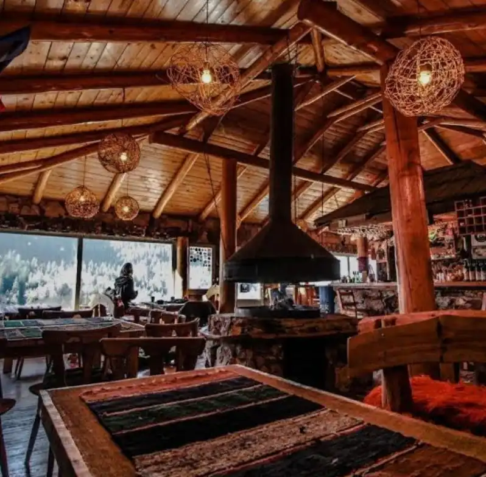
1500 m · Bandžov 1500 m · BandžovPlaninski restoran i dom kulture u selu Bandžov na 1.500 m nadmorske visine, svega nekoliko kilometara od Rožaja. Nudi autentičnu planinsku kuhinju — kačamak, cicvaru, domaću pogaču i pečenje s roštilja — uz predivan pogled na Hajlu i okolne planine. Kapacitet: 60 mjesta za sjedenje, 30 ležaja. Mountain restaurant and cultural centre in the village of Bandžov at 1,500 m above sea level, just a few kilometres from Rožaje. Offers authentic mountain cuisine — kačamak, cicvara, homemade pogača and roasted meats — with a beautiful view of Hajla and the surrounding mountains. Capacity: 60 seats, 30 beds.
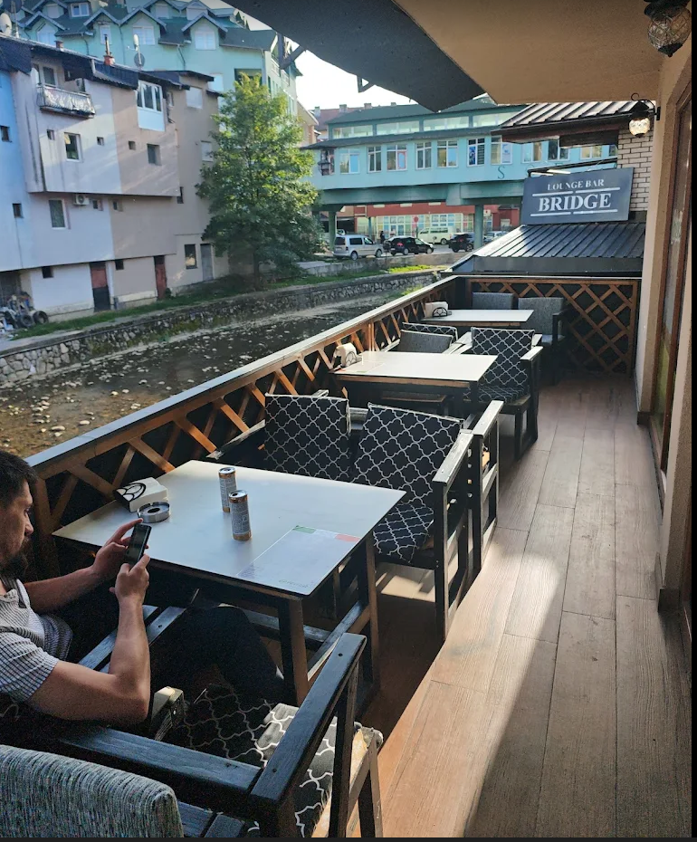
Brza hrana Fast FoodLorenza je popularan fast food objekat u Rožajama s brzom uslugom i povoljnim cijenama. Nudi sendviče, ćevape, pljeskavice i druge specijalitete s roštilja — idealno za brzi i ukusni obrok u gradu. Lorenza is a popular fast food spot in Rožaje with quick service and affordable prices. It offers sandwiches, ćevapi, pljeskavica and other grilled items — ideal for a quick and tasty meal in town.
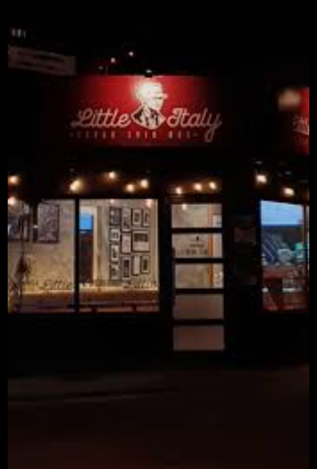
Pizza · Italijanska Pizza · ItalianLittle Italy nudi autentičan italijanski fast food ukus u Rožajama — svježe pečene pizze na tankom tijestu, pasta i italijanski sendviči. Brza usluga i bogat izbor okusa za svakoga. Little Italy brings an authentic Italian fast food taste to Rožaje — freshly baked thin-crust pizzas, pasta and Italian sandwiches. Quick service and a rich variety of flavours for everyone.
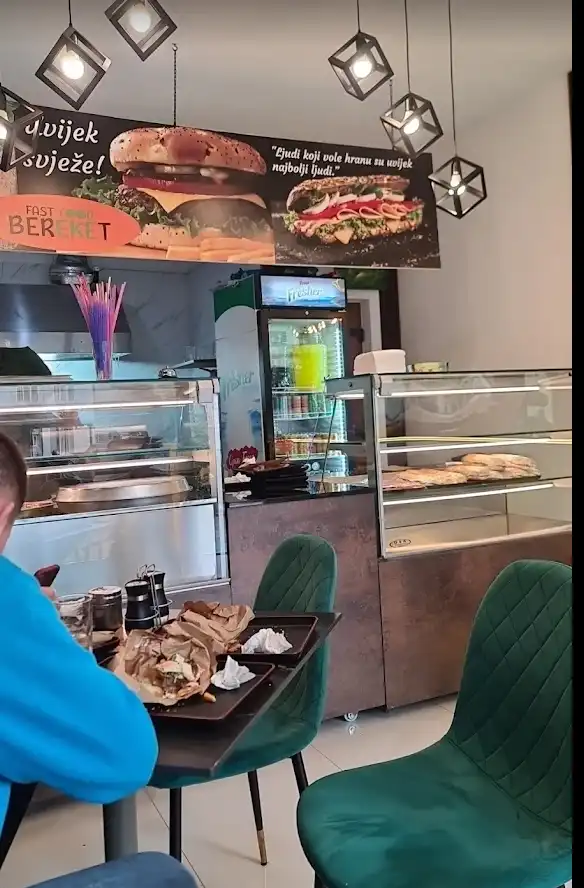
Burek · Pečenje Burek · Roasted MeatFast Food Bereket smješten je na Trgu IX Crnogorske Brigade u Rožajama. Nudi svježe pečen burek, pite s različitim nadjevima i toplo pečenje — dobar izbor za brz i izdašan obrok u centru grada. Fast Food Bereket is located on Trg IX Crnogorske Brigade in Rožaje. It offers freshly baked burek, pies with various fillings and warm roasted meats — a good choice for a quick and filling meal in the city centre.
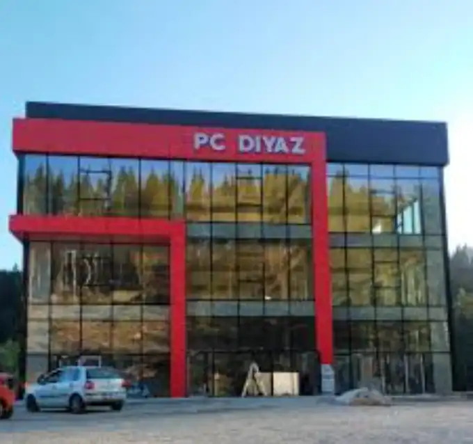
Kafić · Lounge Café · LoungePC Diyaz je kafić i lounge bar u Rožajama, poznat po ugodnoj atmosferi i dobrom izboru pića. Omiljeno okupljalište mještana za jutarnju kafu, opušteno poslijepodne ili večernji izlazak s društvom. PC Diyaz is a café and lounge bar in Rožaje, known for its pleasant atmosphere and good selection of drinks. A favourite gathering place for locals for a morning coffee, a relaxed afternoon or an evening out with friends.
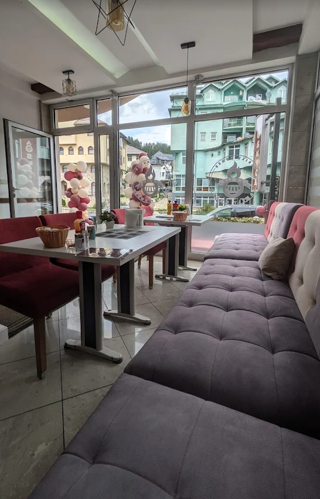
Brza hrana Fast FoodOsmica je prepoznatljivi fast food objekat u Rožajama, poznat po brzoj usluzi i domaćim ukusima. Omiljen među lokalnim stanovništvom zahvaljujući kvalitetnoj hrani po pristupačnim cijenama — dobar izbor za brzi obrok u bilo koje doba dana. Osmica is a well-known fast food spot in Rožaje, appreciated for quick service and homemade flavours. A favourite among locals thanks to quality food at affordable prices — a solid choice for a quick meal at any time of day.
Savjeti za
posjetioce
Tips for
Visitors
Rezervišite unaprijed Book in Advance
Rožajski restorani, posebno etno kuće i planinska odmarališta, često su popunjeni vikendom i tokom ljetne sezone (juli–august). Preporučujemo rezervaciju barem dan ranije. Rožaje restaurants, especially ethno houses and mountain retreats, are often full on weekends and during the summer season (July–August). We recommend booking at least a day in advance.
Plaćanje i cijene Payment & Prices
Valuta je euro (€). Većina restorana prihvata kartično plaćanje, ali planinski objekti poput Saraja Pod Hajlom mogu raditi isključivo s gotovinom — ponijeti sitniš. The currency is euro (€). Most restaurants accept card payments, but mountain venues like Saraj Pod Hajlom may operate cash-only — bring change.
Što naručiti What to Order
U Rožajama obavezno probajte: ćevape (Kero), bosanski lonac i mantije (Ognjište), jagnjetinu s ražnja (Saraj Pod Hajlom) i domaći kajmak koji prate gotovo sva jela. In Rožaje be sure to try: ćevapi (Kero), Bosnian pot stew and mantije (Ognjište), spit-roasted lamb (Saraj Pod Hajlom) and homemade kajmak cream served alongside almost every dish.
Sezona i radno vrijeme Season & Opening Hours
Planinski objekti (Saraj Pod Hajlom) mogu imati skraćeno radno vrijeme ili zatvoreni biti van sezone (oktobar–maj). Restorani u centru rade cijele godine. Uvijek provjerite radno vrijeme telefonski. Mountain venues (Saraj Pod Hajlom) may have reduced hours or be closed out of season (October–May). Restaurants in the centre operate year-round. Always check opening hours by phone.
Pažljivo biran odabir Carefully Curated
Svi restorani su odabrani na temelju recenzija posjetilaca, lokalnih preporuka i dugogodišnje tradicije. All restaurants are selected based on visitor reviews, local recommendations and long-standing tradition.
Planinska hrana Mountain Food
Kuhinja Rožaja je odraz planinske tradicije — svježe, domaće, hranjivo. Hajla na 2.403 m oblikuje lokalni identitet i ukus. Rožaje cuisine reflects mountain tradition — fresh, homemade, nourishing. Hajla at 2,403 m shapes local identity and flavour.
Turistička organizacija Tourist Organisation
Za više preporuka o restoranima kontaktirajte Turističku organizaciju Rožaje:
torozaje.me
For more restaurant recommendations contact the Tourist Organisation of Rožaje:
torozaje.me